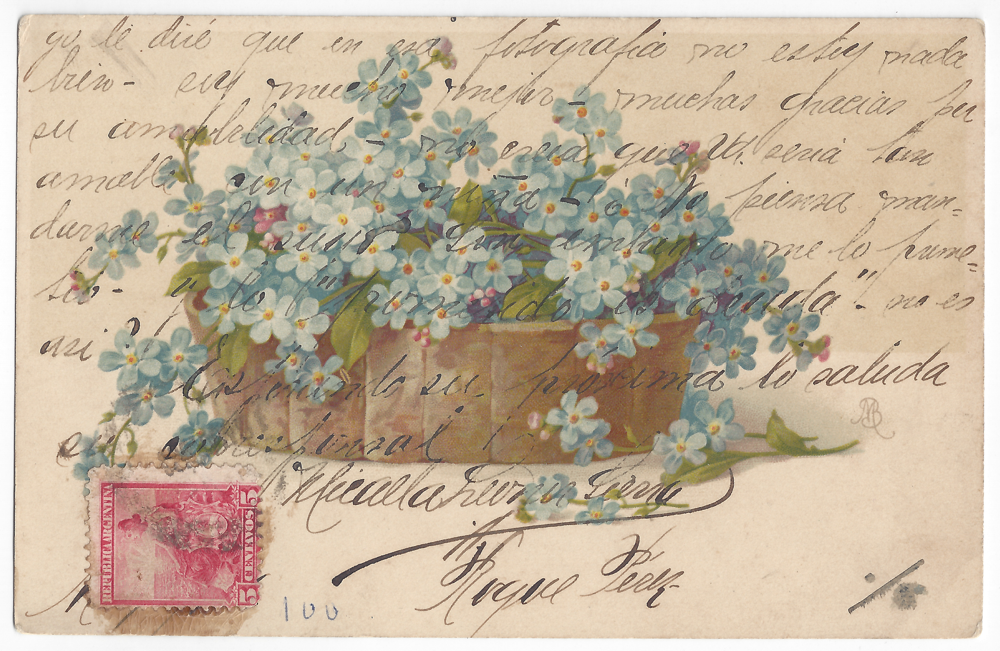
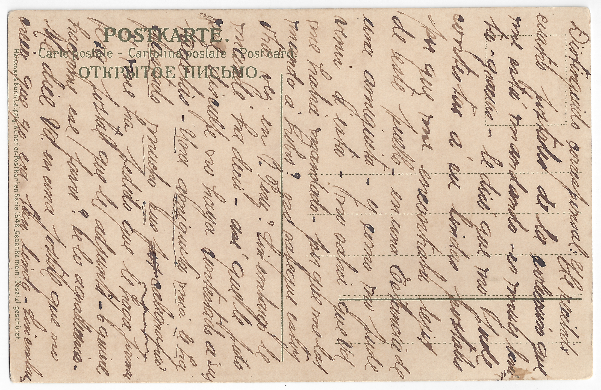

Description: Postcard to Distinguido corresponsal(3)

yo le dire que en esa fotografia no estoy nada
bien – soy mucho mejor – muchas gracias por
su amabilidad – no creia que Ud. seria
tan amable con un niña - ¿No piensa man-
darme el suyo? Sin embargo me lo prome-
tio – y lo ”prometido es deuda”, no es
asi?
Esperando su próxima lo saluda
su corresponsal
Micaela [Leoner] Sierra
Parque Pérez
yo le dire que en esa fotografia no estoy nada
bien – soy mucho mejor – muchas gracias por
su amabilidad – no creia que Ud. seria
tan amable con un niña - ¿No piensa man-
darme el suyo? Sin embargo me lo prome-
tio – y lo ”prometido es deuda”, no es
asi?
Esperando su próxima lo saluda
su corresponsal
Micaela [Leoner] Sierra
Parque Pérez
but I’ll tell you that in that picture I don’t look great, I’m much better. Thank
you for your kindness. I never thought you’d be so nice to a girl. Aren’t you going
to send me yours [portrait]? You promised this, and “a promise is a promise”, isn’t
it?
Looking forward to hearing from you.
Your correspondent,
Micaela [Leonor] Sierra
Parque Pérez

Distinguido corresponsal: He recibido
cuatro postales de la colección que
me está mandando – es muy boni-
ta – gracias – le diré que no pude
contestar á su lindas postales
por que me encontraba lejos
de este pueblo – en una Estancia
de una amiguita – y como no pude
venir á esta – ¿no sabía que Ud
me había mandando – por que me las
manda á [?]? no sabe que estoy
otra vez en P. Perez? Sin embargo le
mandé ha decir – así que le pido
me disculpe no haya contestado a sus
tarjetas – Una amiguita mia le ha
gustado mucho sus por caligrafia
y me ha pedido que le haga firmar
esa postal que le adjunto - ¿quiere
hacerme ese favor? Se los agradeceria –
Me dice Ud. en una postal que no
creia que yo era tan linda – [?]
Distinguido corresponsal: He recibido
cuatro postales de la colección que
me está mandando – es muy boni-
ta – gracias – le diré que no pude
contestar á su lindas postales
por que me encontraba lejos
de este pueblo – en una Estancia
de una amiguita – y como no pude
venir á esta – ¿no sabía que Ud
me había mandando – por que me las
manda á [?]? no sabe que estoy
otra vez en P. Perez? Sin embargo le
mandé ha decir – así que le pido
me disculpe no haya contestado a sus
tarjetas – Una amiguita mia le ha
gustado mucho sus por caligrafia
y me ha pedido que le haga firmar
esa postal que le adjunto - ¿quiere
hacerme ese favor? Se los agradeceria –
Me dice Ud. en una postal que no
creia que yo era tan linda – [?]
Distinguished Correspondent: I have received
four postcards from the collection that
you are sending me. It is very nice,
thank you. I will tell you that I could not
reply to your pretty postcards because
I was far away from this town, at a friend’s
ranch - and since I could not come here,
I did not know that you had sent them to me.
Why are you sending them to [?]? Don't you know
that I am again in P. Perez? However, I sent
you word of this. So I beg your pardon and
apologize for not answering your cards.
A little friend of mine liked your calligraphy
very much and asked me to have you sign the
enclosed postcard. Would you do me that favor?
I would appreciate it. You tell me on a
postcard that you didn't think I was so pretty. [?]